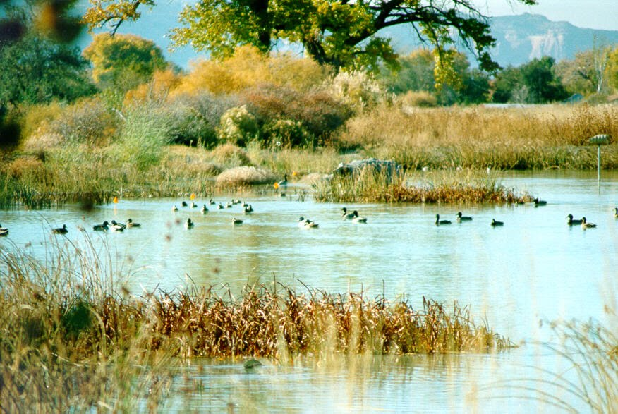

Chapter 8: What Are the Consequences
| ||||||||||||||||||||||||||||||||||||||||||||

Almost without exception, mountain glaciers around the world are retreating. A photograph taken in 1849 of the Rhone Glacier in Gletsch, Switzerland, shows a huge river of ice slowly creeping down a mountain side. A photo of the same scene today shows a green valley with only a small portion of the glacier visible, halfway up the mountain. Photos like this exist for glaciers in many parts of the world. One of the clearly documented examples is the rapid retreat of glacial ice on Mount Kilimanjaro in Tanzania. The volume of the ice cover on the mountain has decreased by 80 percent in the past 100 years, a large portion of that has occurred since 2000.
An estimated 75 percent of Earths fresh water is trapped in ice around the world. Melting of this ice has far-ranging consequences. Many people rely on seasonal runoff from mountain glaciers for irrigation, drinking water and power generation. Shortages on the west coast of the United States, the Andes and the Himalayas could have the most severe impacts.
QUESTION 8.1. What other impacts might occur as a result of disappearance of glaciers?
To find more information about glaciers visit
- the National Snow and Ice Data Center
- Extreme Ice Survey - images documenting the planet's changing ecosystems,
glaciers in particular.
| Investigation | |

|
8-1. More on Glaciers A. Glaciers Then and Now - an activity from Windows to the Universe. Compare photographs of glaciers to observe how Alaskan glaciers have changed over the last century. http://www.windows2universe.org/teacher_resources/teach_glacier.html This includes pairs of photos for change over time comparison from eight glaciers in Alaska - http://www.windows2universe.org/teacher_resources/glacier_then_now.pdf  James Balog on Capturing our Disappearing Glaciers
2012 Oct 11. At serious risk to his safety, James Balog has documented the erosion of glaciers in Switzerland, Greenland, Iceland, and Alaska. With Bill Moyers he shares his photos and footage. See trailer of Balogs film, Chasing Ice. Said Balog, What made me a skeptic 30 years ago was that I didnt have it in my head that it was possible that our species, homo sapiens, was capable of so profoundly altering the basic physics and chemistry of the planet. See all or part of this 27 minute video and C. Weird Weather: Our glaciers are vanishing and with them goes our water.
|
| |
|
Polar Ice
The northern hemisphere polar ice (the Arctic which is mostly water) is changing differently from the southern hemisphere polar ice (the Antarctic, which is a continent).
According to data gathered by NASA satellites, the permanent ice cover in the Arctic has been shrinking at an average rate of 9 percent per decade since studies began in the mid 1980s. Other data, collected by submarines, also shows the Arctic ice sheet to be thinning. As the open ocean replaces areas once covered by highly reflective ice, more of the suns energy is being absorbed by the surrounding water. This is expected to accelerate the melting of ice in the Arctic.
Antarctica appears to be changing at least as fast, if not faster, though the story is more complicated than what's occurring in the Arctic. According to several studies, the area covered by ice is increasing slightly while the total volume of ice is decreasing. How can this be? The answer lies in the fact that ice can flow without melting. As the temperature of the ice mass increases slightly, the rate at which it flows out over the continent increases. At the same time warmer ocean water erodes the ice between the ocean floor and the surface. The result, as numerous radar measurements have confirmed, is that much of the loss of volume is hidden from sight.
One spectacular demonstration of erosion of ice shelves below the ocean surface is in the change that has been observed in the formation of icebergs. Historically, icebergs form by a gradual cracking and dropping of individual icebergs over long periods. This is no longer the case. Rapid disintegration events are becoming the dominant process. The first observations were in the break-up of the Larson A ice shelf on the Antarctic Peninsula in January of 1995 when 1,500 square kilometers disintegrated into small icebergs in a matter of weeks. Then in 1999, a huge iceberg 38 miles long drifted
into shipping lanes 200 miles south of the southernmost tip of South
America. Disintegration events are being seen more often and are the subjects of on-going climate research. Scientists continue to monitor the ice sheets by satellite to
learn if they are melting further.
The 2013 Fifth Assessment Report of the IPCC concludes that:
- Over the last two decades, the Greenland and Antarctic ice sheets have been losing mass, glaciers have continued to shrink almost worldwide, and Arctic sea ice and Northern Hemisphere spring snow cover have continued to decrease in extent. By the end of the 21st century, year-round reductions in Arctic sea ice are projected ranging from 8% to 94%. By the end of the 21st century, the global glacier volume is projected to decrease by 15% to 85%. It is virtually certain that near-surface permafrost extent at high northern latitudes will be reduced by between 37% to 81%.
The National Snow and Ice Data Center has excellent resources for learning more about polar ice:
NASA Video on Arctic Sea IceDr Tom Wagner of NASA explains the sea ice minimum. |
2014 May 12, NASA RELEASE 14-131: NASA-UCI Study Indicates Loss of West Antarctic Glaciers Appears Unstoppable. Excerpt: A new study by researchers at NASA and the University of California, Irvine, finds a rapidly melting section of the West Antarctic Ice Sheet appears to be in an irreversible state of decline, with nothing to stop the glaciers in this area from melting into the sea. ...These glaciers already contribute significantly to sea level rise, releasing almost as much ice into the ocean annually as the entire Greenland Ice Sheet. They contain enough ice to raise global sea level by 4 feet (1.2 meters) and are melting faster than most scientists had expected. [Eric] Rignot said these findings will require an upward revision to current predictions of sea level rise.... Rignot said..."The collapse of this sector of West Antarctica appears to be unstoppable...The fact that the retreat is happening simultaneously over a large sector suggests it was triggered by a common cause, such as an increase in the amount of ocean heat beneath the floating sections of the glaciers...." See the full release. |
According to the IPCC, sea levels have risen by 10 to 25 cm over the past 100 years. This is roughly 1.5 to 2 mm/year. Satellite measurements taken over the past decade show the rate of sea level rise has increased to about 3 mm/year. It is very likely that the rise in sea level has resulted from the increase in temperature. First, water expands as it warms; and second, as glaciers on land melt, their water is added to the worlds oceans. Computer models predict that the rate of sea level rise will increase during the 21st century. The size of this increase is a point of considerable controversy due to the uncertainties about how all the contributing factors will interact.
| Investigation | |
|
|
8-2. Explore Flood Maps You can move and zoom in on coastlines around the world and check for coastline changes for sea level rises ranging from 0 to 60 meters. Flood Maps interactive is at http://flood.firetree.net. Keep in mind that the actual rate of sea level rise at the beginning of this millennium was about 3 mm per year. So the range of 0-60 meters for this tool is designed to project for some worst case scenarios where sea level rise accelerates tremendously. However, also keep in mind that if there is full melting of Greenlands ice sheet, sea levels could rise by more than 6 meters. |
| |
|
The 2013 Fifth Assessment Report of the IPCC concludes that:
- The rate of sea level rise since the mid-19th century has been larger than the mean rate during the previous two millennia. Over the period 19012010, global mean sea level rose by 0.19 m. This century global mean sea level will rise as much as 0.98 m.
- Environmental Protection Agency (EPA) Sea Level Rise Reports and Coastal Zones
- National Aeronautics and Space Administration (NASA) Earth Observing System
- National Oceanic and Atmospheric Administration (NOAA) Sea Level Trends
- Is Sea Level Rise Accelerating? page at RealClimate.org
- University of Colorado Sea Level Research Group
|
Ocean Acidification The 2013 Fifth Assessment Report of the IPCC concludes that:
|
|
QUESTION 8.2. What other impacts might occur if there is disruption of the ocean food chain?
Animals
There is strong evidence that the behavior and distribution of animals are being affected by global warming. Scientists are confirming observations of bird watchers, farmers, hunters and historical records: the ranges of many insects are moving northward, migration patterns for many animals are changing, birds are nesting earlier in the spring and small mammals are coming out of hibernation earlier and breeding earlier in the year. The effects are complicated and are connected with changes in vegetation.
More about changes in animal behavior can be found in the Global Systems Science books:
Plants
As the climate warms local weather patterns change. Changes in local temperature and rainfall can cause some plants to go extinct in some areas and expand their ranges into others. Unfortunately, unlike animals they are not able to move far, and in the case of island and mountain species, there may be no place to go. Slow growing species or those who find their movement blocked by cities and farms are also more severely affected. Plant communities may be lost as species adapt and move at different rates, which have profound effects for the entire ecosystem.
See also
Climate choices interactive that shows
IMPACTS  Regional Consequences in particular for northeastern United States.
Regional Consequences in particular for northeastern United States.
QUESTION 8.3.
Have you heard of impacts ecosystemsplants and animals in your region?
What are those impacts?
Extreme Weather
Changes in climate also include the frequency and intensity of extreme weather events such as:{kind=link}
- devastating storms,
- tornadoes,
- floods,
- cold snaps,
- heat waves,
- droughts (and resulting famines such as those that that have killed millions in sub-Saharan Africa)
According to the IPCC 2007 Assessment Report, each of these types of severe weather has increased worldwide since 1950. Tropical storms and hurricanes, two additional types of severe weather, vary a lot from one year to the next and are more difficult to track. Evidence suggests, however, the intensity and duration of these storms has increased since 1970. The impact of these changes is impacting areas from agriculture and forestry to water resources and human health.
The 2013 Fifth Assessment Report of the IPCC concludes that:
- This century, the high latitudes and the equatorial Pacific Ocean
are likely to experience an increase in annual mean precipitation.
- In many mid-latitude and subtropical dry regions, mean precipitation will likely decrease
- In many mid-latitude wet regions, mean
precipitation will likely increase.
- Extreme precipitation events over most of the mid-latitude land masses and over wet tropical regions will very likely become more intense and more frequent.
- It is very likely that heat waves will occur with a higher frequency and duration.
QUESTION 8.4. Have extreme weather events occurred in your area?
Can people in your area sense if there is any change in frequency or stregth of extreme weather?
Are These Trends and Events Really Caused by Global Warming?
While trends and events provide evidence of a warming world, it is difficult for scientists to conclude for certain that they are all caused by global warming. Climatologist Stephen Schneider illustrates this idea with the following example:
Suppose you were trying to determine whether or not the total number of cars on the highways in a given urban area was increasing. You would have to count cars at a number of points throughout the area, and at different times of day, and then average the results. From day to day, the average number of cars will vary quite a bit, depending on a number of factors such as the day of the week, whether or not it is a holiday, or a special event like a World Series ball game. However, if the number of automobiles on the road were increasing over the years, you would expect to see a trend of increasing daily averages. If the trend is large enough, it will be noticeable despite the variations of large and small daily averages.
Now suppose a major traffic jam occurs. You can trace the problem to an overturned truck that blocked a freeway, causing traffic tie-ups throughout the city. Was this major traffic jam caused by the increasing number of cars on the road? The answer is noat least not directly. The gradual trend of an increasing number of cars on the road simply makes it more likely that a given event, such as an overturned truck, will result in a huge, citywide traffic jam.
Similarly, the melting of glaciers, rising sea levels, changes in the
behavior patterns of wildlife, hot spells, droughts, and forest
fireslike traffic jamsprovide evidence that our world is warming,
although we cannot say for certain that any one of them is caused by
global warming.
Trend and variation, by Ole Christoffer Haga, produced by TeddyTV.
[http://www.youtube.com/watch?v=e0vj-0imOLw&feature=player_embedded]
| Investigation | |
|
|
8-3. Climate Change Indicators in the United States Visit the U. S. Environmental Protection Agency (EPA) web pages on Climate Change Indicators: Pick one or more categories (e.g. precipitation, ocean acidity, length of growing season, ....see more categories at the bottom of the "indicators" web page), and become and "expert" on it. Then illuminate your fellow students with your newly acquired wisdom on that category either by live sharing in groups, e-mail, or social media. |
| |
|
II. How Will Life on Earth
Be Affected by Global Warming?
As far as local regions are concerned, no one knows for certain how life will be affected. According to climatologist Stephen Schneider, Its still tough to be confident in projecting where and when it will be wetter and drier, how many floods might occur in the spring in California, or forest fires in Wyoming or Siberia in August.
Nonetheless, it is possible to make some reasonable predictions for life on the planet if an increase of a few degrees in global temperatures occurs. Predictions can be based on the observed differences between different regions of the globe today, or by studies of past conditions when the climate was known to be different from what it is today. Based on these studies, the IPCC made its most dramatic predictions: if current trends continue, the world of our grandchildren will be different from ours in several respects.
| Loss of coastal lands In future decades more and more food will be necessary to sustain the worlds growing population. Coastal plains are among the most fertile in the world. A rise in sea level would inundate some coastal areas. According to the IPCC, Estimated land losses range from 0.05% in Uruguay, 1% for Egypt, 6% for the Netherlands, and 17.5% for Bangladesh up to about 80% for the Majuro Atoll in the Marshall Islands. Areas in the United States threatened by sea level rise include areas of Florida, California, Louisiana, and other coastal areas. As coast lines are lost to rising sea level, salt water is more likely to invade underground sources of fresh water near the coast. |
||
| Danger from storm surge Increases in extreme weather events and rising sea level combine to increase the danger from a phenomenon known as storm surge, which happens when the water that is pushed toward land by the force of the wind during tropical storms and hurricanes. In combination with high tides, an advancing surge can increase the water level by 15 feet or more. A large proportion of the worlds population lives in coastal areas, and every few years tragedies occur when especially powerful storms buffet coastal areas with high winds and waves, causing billions of dollars in flood damage and killing thousands of people. Examples include
According to an IPCC report, over 40 million people are in danger
of coastal storm surges and an increase of 50 cm in sea level would
increase the number of people at risk to close to 100 million. The Maldives, an island nation in the Indian Ocean, stands an average of 7 ft above sea level. In May of 2009 the government of the Maldives held a cabinet meeting underwater to highlight the threat of global warming to their nation. During the meeting they signed a document calling for global cuts in greenhouse gas emissions. Evacuation of low lying islands will be necessary even before total flooding of these areas occurs due to salt water invading scarce fresh water sources and soaking soils used for raising crops. Video from Democacy Now [http://www.youtube.com/watch?v=SxyF3-dMxx0] QUESTION 8.5. Can you find any online sources that illustrate how sea level rise or storm surges affect coastal areas? |
||
Forestry and agriculture The 2007 IPPC Assessment Report projects effects of global warming on forestry and agriculture to include:
Other effects may be more complex, but no less dramatic. For example, Alaska has experienced the large scale death of a commercially important forest species, the white spruce, because an increase in the number of warm summers has allowed the spruce bark beetle population to grow beyond the ability of the trees natural defenses. Throughout the world, some forest preserves have been protected from logging or clearing, but global warming pressures ecosystems that may cause whole forests to either relocate to cooler climate or be replaced by other vegetation. If the change occurs at a pace faster than certain species of trees can adapt to, entire forest types may disappear and be replaced by new forest ecosystems. Overall, a higher concentration of carbon dioxide in the atmosphere may increase the growth of crops in some areas, but it will also increase the growth of weeds and insect pests. The greatest danger will be to the poorest people in the world, where available crops are just barely able to feed people today. QUESTION 8.6. What other impacts might occur as a result of climate change effects on forestry and agriculture?
|
 |
|
| Change in rainfall
Higher average global temperatures increases evaporation from oceans and therefore increases water vapor in the atmosphere. The 2007 IPCC Assessment Report predicts that the global average rainfall is very likely to increase. Predicting the effects in specific locations is complicated by the limitations of computer modeling, but some trends seem clear: In high latitude regions and the tropics, rainfall is expected increase significantly whereas the mid-latitudes will see decreases. Areas like the Mediterranean and North Africa will become drier as the global temperature increases. Precipitation in all areas is expected to increasingly come in the form of severe events that increase flooding and erosion. Only a few drier areas in the northern latitudes are predicted to benefit from these changes. |
||
| Loss of wetlands
Saltwater marshes, mangrove ecosystems, coastal wetlands, sandy beaches, coral reefs and atolls, and river deltas are already impacted by the expansion of farms and cities. Those that remain would be further affected by rising sea levels, storm surges, increased runoff from storms, and encroachment of sea water into fresh water marshes. In turn the diversity of wildlife, freshwater supplies, fisheries, and tourism are all negatively affected.
|
 |
|
| Increased desertification
The decreased rainfall in some areas such as in sub-Saharan Africa, South and Southeast Asia, will likely wreak havoc in those arid and semi-arid regions where delicately balanced ecosystems depend upon the sparse vegetation to maintain fragile soils that hold in limited moisture. Any precarious agriculture is easily impacted by a series of droughts or prolonged shortfalls in precipitation. But in general, as forested area and vegetation dies, soils are vulnerable to erosion and desert areas expand in a process called desertification. Once an area has reverted to desert, recovery is unlikely. |
||
| Threats to human health Illnesses caused by heat waves may increase as well as diseases such as malaria, dengue, and yellow fever, which are carried by insects. In addition, warmer weather and flooding would encourage the growth of organisms that cause salmonellosis, cholera, and giardiasis. Further health problems would be caused by shortages of food, fresh water, and increased air and water pollution. High temperatures raise levels of ozone and other ground-level air pollutants that aggravate heart and lung conditions particularly in urban areas. The World Health Organization reports that during the European heat wave of 2003, more than 70,000 excess deaths were recorded. |
|
{kind=link}
2016 April 4. White House FACT SHEET: What Climate Change Means for Your Health and Family. The White House Office of the Press Secretary announced the release of a new final report called The Impacts of Climate Change on Human Health in the United States: A Scientific Assessment. Go to https://www.whitehouse.gov/the-press-office/2016/04/04/fact-sheet-what-climate-change-means-your-health-and-family to find out how air pollution and airborne allergens will likely increase, extreme heat can be expected to cause an increase in the number of premature deaths, warmer winter and spring temperatures are projected to lead to earlier annual onset of Lyme disease cases in the eastern United States, rising temperature and increases in flooding, runoff events, and drought likely leading to increases in the occurrence and transport of pathogens in agricultural environments, with the largest health impact on vulnerable populations.
III. What Would You Do?
|
According to the scientific studies, what we do today will not affect our lives very much tomorrow or the next day. The greatest effect will be felt some years from nowby our children and grandchildren, and people living then. Is protecting the environment for future generations worth strong actions that might impact jobs today? Would moderate actions, such as conservation, recycling, and planting trees be better? Or is it best to take no action except continue to study the problem?
QUESTION 8.7. If you were a government decision maker, |
2014 Feb 18 - Yale Forum video interview (2 min): Abrupt Climate Change Implications for People and for Businesses. University of Colorado Professor Jim White offers examples in the individual and corporate sectors of impacts that could be felt as a result of abrupt climate change. Dr. White explains two simple examples to illustrate the idea of abrupt climate change. First, a supplier of large-scale air conditioning systems may have to design "oversized for today so they can adapt to tomorrow" to deal with the question, Whats the average high temperatures going to be 40 years from now. Second, if a meter about three feet of sea-level rise over the next 100 years is something people have trouble wrapping their minds around, what if the rise rate goes up by a factor of three, or a meter of sea-level rise over 30 years. That prospect is quite possible, very do-able in the paleo record, and something that the West Antarctic Ice Sheet could do, says James White, professor of geological sciences at the University of Colorado. Thirty years. Thats a mortgage, says White in explaining the notion of abrupt climate change. People can understand that. You buy a place on the beach, and before you get that thing paid off, its useless. You cant insure it, you cant sell it, youve lost your money. |
| For new material relating to this chapter,
please see the GSS website
Staying Up To Date page: http://www.globalsystemsscience.org/uptodate/cc/ch8 |